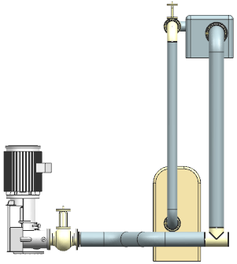
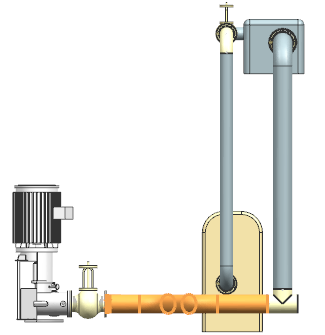

打开并查看部件
-
打开 rtg1_replace_remove。

-
在机械管线布置工具条上的设计规则下拉菜单中，选择交互检查
 。
。 -
在违例组的过滤器列表中，选择跳过替代。
-
点击导航违例下方的下一个
 。
。设计规则违例对话框将指出管线装配中的一对部件之间存在不兼容连接。

NX 将高亮显示受影响的部件以及特性与这个部件冲突的相邻部件。
-
点击完整的违例文本
 。
。The two objects are incompatible due to:
Incompatible NPSs 300.000 and 200.000
(这两个对象不兼容是由于：
不兼容的 NPS，200.00与300.00) -
关闭信息窗口，然后点击取消。